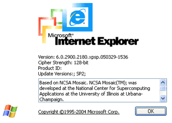
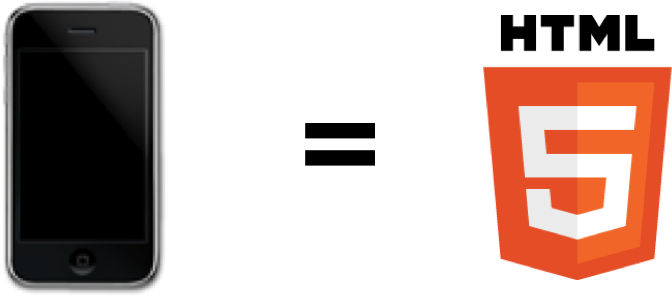

Mozilla Firefox OS - Mobile Open Web Platform
{Your name}, {your
@twitter
or
you@email.com
}
Who are we?
Marco Zehe
QA Engineer & Accessibility Evangelist
marcozehe.de
@MarcoInEnglish
Eitan Isaacson
Software Developer
monotonous.org
@eeejay
What Mozilla did…

What Mozilla did…
Ongoing work…
A new challenge
Photo by Alexander Rentsch
A lot is at stake
Photo by USAID
Broken promises

Business realities
Photo by Michael Gil
Hardware lockout
Photo by Doug Geisler
Enter Firefox OS
Demo
Start Demo
⟳
⟲
+
-
Web API work
http://arewemobileyet.com
A phone for the rest of the world
Photo by James Cridland
A phone for the rest of developers
Photo by okfn
Accessibility in Firefox OS
The same familiar standards and practices used on the web today
Based on the Firefox accessibility engine
Overlaps with our Firefox for Android solution
Similar features and new surprises!
Demo
Start Demo
⟳
⟲
+
-
Thanks!
Photo by Yortw


 Photo by Alexander Rentsch
Photo by Alexander Rentsch
 Photo by USAID
Photo by USAID
 Photo by Michael Gil
Photo by Michael Gil
 Photo by Doug Geisler
Photo by Doug Geisler